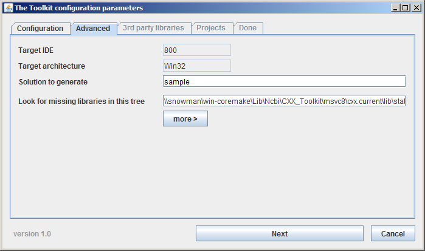
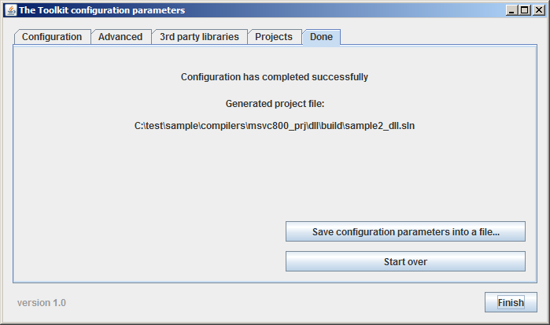

Overview
The overview for this chapter consists of the following topics:
Introduction
Chapter Outline
Introduction
This chapter describes in detail how to configure, build, and use the NCBI C++ Toolkit (or selected components of it) on supported platforms. See the Getting Started chapter for a general overview of the process. A list of all supported platforms can be seen here.
Note: Users insde NCBI who just want to use the Toolkit don't need to configure and build it - there are various configurations of the Toolkit prebuilt and ready to use. See the new_project script for more information.
Configuring is the process of creating configuration files that define exactly what can be built and what options may be used in the build process. The created configuration files include C headers that define suitable preprocessor macros, as well makefiles (for UNIX) or project solutions (for MS Visual C++ or for Xcode) used in the build step.
With some compilers that include an Integrated Development Environment (e.g. MS Visual C++), a top-level build target, called CONFIGURE, is available. On UNIX-like systems it is necessary to execute a configuration script configure – sometimes via a special wrapper script that first performs some platform-specific pre-configuration steps and then runs the configuration process.
The configuration process defines the set of targets that can be built. It is up to the user to choose which of those targets to build and to choose the desired build options. For more details on the build system and the Makefiles created by the configuration process, see the chapter on Working with Makefiles.
Successful builds result in immediately usable libraries and applications, and generally there is no need for a separate installation step on any platform.
In addition to building the Toolkit libraries and applications, this chapter also discusses building test suites and sample applications. You might want to build and run a test suite if you are having trouble using the Toolkit and you aren’t sure if it is working properly. While it isn’t necessary to build a test suite to use the Toolkit, it can be useful for ensuring that the Toolkit has been properly configured and built. Building a sample application may be a good first step toward learning how to build your own applications.
General Information for All Platforms
Using the Toolkit on any platform requires these basic high-level steps:
Get the source files from NCBI and place them in your working directory.
Build.
Use the Toolkit from your application.
Choosing a Build Scope
Choosing a build scope means deciding whether you want to build the entire Toolkit or just some portion of it. The build system includes methods on most platforms for building pre-defined scopes, such as just the core libraries and applications, the Genome Workbench, pre-defined lists of one or more projects, etc. Choosing a build scope must be done before configuring on some platforms. On other platforms it can be done either before or after configuring. See the section for your platform for more details on pre-defined build scope choices.
Reducing Build Scope with Project Tags
The pre-defined build scopes mentioned above may be unnecessarily broad for your task. You can reduce the build scope by using project tags.
There are two complementary parts to using project tags. First, project tags are defined and associated with selected projects. Second, a tag filter is supplied to the configuration process. The configuration process then filters the list of projects that will be built, based on each project's tags and the supplied tag filter.
An important benefit of using project tags is that all dependencies for the projects that match the tag filter will be automatically deduced and added to the build list.
Defining Project Tags
All project tags must be defined in src\build-system\project_tags.txt prior to use. Tag names should be easily recognizable and classifiable, like ‘proj[_subproj]’, e.g. “pubchem” or “pubchem_openeye”.
Once defined in project_tags.txt, project tags can then be associated with any number of projects by using the PROJ_TAG macro in the Makefile.in or Makefile.*.{app|lib} for the selected projects. Project tag definitions apply recursively to subprojects and subdirectories (similar to a REQUIRES definition), thereby removing the need to define tags in all makefiles in a subtree. Subprojects may define additional tags, or undefine inherited tags by prefixing a hyphen '-' to the tag.
The syntax for defining (or undefining) a project tag is:
PROJ_TAG = [-]mytag1 [[-]mytag2...]For example, if Makefile.in has this line:
PROJ_TAG = foo barand a project beneath it in the tree hierarchy (say Makefile.*.app) has this line:
PROJ_TAG = xyz -barthen the latter project's effective tag definition is:
PROJ_TAG = foo xyzFiltering with Project Tags
A tag filter can be constructed from one or more project tags – either as a single tag or as a Boolean expression of tags. Boolean expressions of tags can include grouping (parentheses) and the '&&' (AND), '||" (OR), and '!' (NOT) operators, for example: (core || web) && !test
Note: An asterisk '*' or an empty string can be used in place of a tag filter in the "Allowed project tags" field on the Configuration tab of the configuration GUI. These values are not filters, but simply indicate that all projects in the build scope will be passed to the configuration process without filtering.
The following places are searched in the order given for the tag filter to use (if any) in the configuration process:
- 1
The "Allowed project tags" field in the configuration GUI (if the configuration GUI is being used).
- 2
A tag filter definition line in a project list file (if one is being used).
- a
To use a project list file for configuration, either specify the project list file in the "Subtree, or LST file" field on the Configuration tab of the configuration GUI or use the --with-projects=FILE argument for the configure script.
- b
When one project list file includes another, only the original will be scanned for a filter. This applies to both interactive (i.e. with the configuration GUI) and non-interactive configuring.
- c
The syntax for the tag filter definition line in a project list file is: #define TAGS [ tag_filter ]
- 3
For MSVC, the -projtag option of the PTB_FLAGS macro in the compilers\msvc{900|1000}_prj\static\build\UtilityProjects\configure._ file for non-interactive configuring, or the same option in the configure_dialog._ file for interactive configuring.
If a significant tag filter (i.e. something besides an asterisk or empty field) is found in one of the above places, then that tag filter will be supplied to the configuration process. Otherwise, there will be no filtering of the projects.
Configure the Build
Prior to configuring, users outside NCBI should make sure the paths to their third party libraries are correctly specified.
For the configuration step you can specify whether to use static or dynamically-linked libraries; whether to generate multithread-safe code; whether to look for various third-party libraries at alternative locations; whether or not to include debugging information; etc.
Configuration can be done in one of three ways:
Using the Configuration GUI.
Using a "native" IDE – MSVC on Windows or Xcode on Mac OS X.
Using the command-line on UNIX, Cygwin/Windows, or Mac OS X.
Site-Specific Third Party Library Configuration
Users outside NCBI should check the file src/build-system/config.site to see if it correctly specifies the paths to their third party libraries. If not, it can be edited using src/build-system/config.site.ex as a guide.
Note: The configure --with-PACKAGE options take precedence over the config.site and PACKAGE_PATH settings.
Using the Configuration GUI
The configuration GUI can be launched from a command shell or from an IDE (MSVC or Xcode). It is Java-based and requires the Java Platform Standard Edition.
The following sections describe how to use the configuration GUI:
See the UNIX, Windows, and Mac OS X sections for OS-specific configuration information.
Starting the configuration GUI
To launch the configuration GUI:
From the command-line: ./configure --with-configure-dialog
From the MSVS IDE: build the -CONFIGURE-DIALOG- project
From the Xcode IDE: build the CONFIGURE-DIALOG target
The configuration GUI has a "Wizard" style design – selections are made in a sequence of steps, followed by clicking the Next button. After each step additional tabs may be enabled, depending on the specific data. It opens with initial values set by the invoking program (the configure script for command-line invocation or the project_tree_builder program for IDE's).
Configuration tab
The Configuration tab looks like:

The Configuration tab allows you to:
Choose between static and dynamically-linked libraries.
Specify the subset of the Toolkit that you want to build, using either a path for a subtree (e.g. src\) or a project list file (*.lst) for specific projects. Clicking on the "..." button opens a file selection dialog, which can be used to navigate to the desired subtree or to select a project list file.
Specify one or more project tags (which will restrict the scope of the build to the specified projects). Clicking on the "..." button simply displays the valid choices for project tags (it isn't used for selecting tags). More than one project tag can be combined in a Boolean expression, for example:
(code || web) && !testLoad a configuration from a file. This requires having previously saved a configuration, from the Done tab. If you load a configuration from a file, the file path is shown in the "Originally loaded from" text field and the Reset button becomes enabled. Clicking the Reset button resets all configuration settings to the values that were used to invoke the configuration GUI.
Advanced tab
The Advanced tab looks like:

The Advanced tab allows you to:
View the current version of the IDE (currently only applicable to Windows / Microsoft Visual Studio).
View the current architecture (currently only applicable to Windows / Microsoft Visual Studio).
Specify the name of a solution file to generate. You can use this to create different solution files for different configurations.
Specify where to look for missing libraries. This can be used to change the build – for example, from cxx.current to cxx.potluck.
In addition, by clicking "more" you will see:

These additional options generally don't need to be changed, but they allow you to:
Exclude the "Build PTB" step from the configure process. This should be selected if the PTB (project tree builder) source is not available. Even if the PTB source is available, it usually makes sense to exclude building the PTB because building it will take longer and generally won't have a benefit.
Prevent whole-tree scanning for missing project dependencies. A project dependency may be missing if, for example, import_project was used and the configuration was changed to something other than simply Debug or Release (e.g. DebugMT).
Use external libraries instead of missing in-tree ones.
Select a different project tree builder. In most cases this won't be needed, but it could be useful for tasks such as debugging the build system.
Select a different location to use as the root of the source tree.
Third party libraries tab
The Third party libraries tab looks like:

The Third party libraries tab allows you to:
Select a different location for third-party libraries.
Select a different location for the NCBI C Toolkit.
Add VTune configurations. If selected, new VTune configurations will be added to the list of available configurations – for example, VTune_DebugDLL.
Projects tab
The Projects tab looks like:

The Projects tab allows you to select exactly which applications and libraries will be built. If an item is not selected, but at least one selected item depends on it, then it will also be built. This provides a convenient way for developers to simply pick the top-level items to build.
The "-all" and "+all" buttons uncheck or check all the items in a column.
The Tags column allows you to quickly select all items having the selected project tag(s). Also, selecting items in the other columns will update the selection status of the tags column.
Done tab
The Done tab looks like:

The Done tab:
Reports whether the project was generated successfully.
Shows the path for the generated solution file.
Gives the option to save the configuration parameters. Once saved, the same parameters can be loaded again from the Configuration tab.
Gives the option to start over and create a new set of configuration parameters.
Gives the option to close the tool, via the Finish button. Closing the tool will return you to the configuration process, which will continue based on the parameters set in the configuration GUI.
Use the Toolkit
After choosing a build scope, configuring, and building the Toolkit, you can now use it. The Toolkit itself includes useful applications, demo programs, and sample code – in addition to the libraries you can use from your own applications. You can also build a suite of test applications and/or sample applications if desired.
Supported Platforms
The term “platform” in this chapter has a specific meaning: the combination of operating system, architecture, and compiler. A supported platform is one for which the Toolkit has been configured, built, tested, and used by other applications.
The list of supported platforms may change with new releases. For the platforms supported in the release you are using, see the Supported Platforms section in the release notes. Note that some platforms are only partially supported.
UNIX
Note: Please also see the General Information for All Platforms section, as it contains relevant information that is not repeated here.
This section covers the following topics:
General Information for UNIX Platforms
This section provides information on configuring, building, and using the Toolkit that is applicable to all UNIX platforms. The section Special Considerations for Specific UNIX Platforms addresses platform-specific details.
Note, however, that the sections on specific platforms do not address the level of support for specific compilers. See the Supported Platforms section in the release notes for information on partially supported compilers.
The following topics are discussed in this section:
Choosing a Build Scope with UNIX
The Toolkit is very large and you may not want to retrieve and build the entire Toolkit if you don’t need to. Therefore, several mechanisms are provided to enable working with only a portion of the Toolkit.
The first thing you can do is to limit the source code retrieved from the repository:
using the shell script import_project; or
using the shell script update_projects.
Next, you can limit what is built:
by configuring with the --with-projects option; or
by running make only within directories of interest; or
by building only a selected list of end targets using flat makefile
You can also choose between static and shared libraries - or build both. Building with static libraries will result in much larger applications and require much more disk space.
Configuring with UNIX
The following topics are discussed in this section:
Configuration Script configure
Different build setups compile C++ (and even C!) code differently; they may vary in the OS standard and 3rd-party libraries and header files, completeness of the C++ implementation, and in compiler bugs. There are also different versions of make and other tools and different file naming conventions on different platforms.
Thus, configuration is needed to use the platform- and compiler-specific features. For this purpose, we are using a script produced by the GNU autoconf utility to automatically generate the build-specific header file ncbiconf.h and makefiles that would work for the given platform.
The user performs configuration by merely running platform-independent (sh, bash) shell script configure (which we pre-generate in-house from the template configure.ac using autoconf).
During the configuration process, many compiler features are tested, and the results of this testing are recorded in the configuration header ncbiconf.h by the means of C preprocessor variables. For example, the preprocessor variable NO_INCLASS_TMPL indicates whether the compiler supports template class methods. Also contained in the ncbiconf.h file are preprocessor variables used to define sized integer and BigScalar types.
The configure script will create a build tree, a hierarchy of directories where object modules, libraries, and executables are to be built. It will also configure all *.in template files located in the NCBI C++ source tree (src/) and deploy the resultant configured files in the relevant places of the build tree. This way, all platform- and compiler-specific tools and flags will be "frozen" inside the configured makefiles in the build tree. The ncbiconf.h (described above, also configured for the given compiler) will be put to the inc/ sub-directory of the resultant build tree.
You can create as many build trees as needed. All build trees refer to the same source tree, but contain their own platform/compiler-specific ncbiconf.h header and/or different set of compilation/linking flags and tools ("frozen" in the makefiles, particularly in Makefile.mk). This allows building libraries and executables using different compilers and/or flags, yet from the same source, and in a uniform way.
A configuration tool with a Java-based GUI is also available and can be launched from the command-line:
./configure --with-configure-dialog
Additional parameters can also be passed to configure, just as without the configuration GUI.
For more information on using the configuration GUI, see the general section on configuring.
Structure of the Build Tree Produced by configure
Each configuration process results in a new build tree. The top-level directories in the tree are:
inc/ - contains the ncbiconf.h configuration header generated by the configure script.
build/ - contains a hierarchy of directories that correspond to those in the src/ (in NCBI C++ original sources). These directories will contain makefiles (Makefile.*) generated by the configure script from the makefile templates (Makefile.*.in) of the corresponding project located in the source tree. The resultant scripts and makefiles will keep references to the original NCBI C++ source directories. There is a "very special" file, Makefile.mk, that contains all configured tools, flags, and local paths. This file is usually included by other makefiles. All build results (object modules, libraries, and executables, as well as any auxiliary files and directories created during the build) will go exclusively into the build tree and not to the original NCBI C++ source directories. This allows for several build trees to use the same source code while compiling and linking with different flags and/or compilers.
lib/ - contains the libraries built by the build/-located projects.
bin/ - contains the executables built by the build/-located projects.
status/ - contains:
config.cache, a cache file;
config.log, a log file;
config.status, a secondary configuration script produced by configure;
*.enabled files, with package and feature availability; and
.*.dep files, with timestamps of the built Toolkit libraries.
Options for Fine-Tuning the configure Script
The configure script is highly customizable. The following sections describe some of the configuration options:
Prohibiting the Use of Some of the System and Third-party Packages
Miscellaneous: --without-exe, --without-execopy, --with-lib-rebuilds(=ask)
Getting Synopsis of Available Configuration Options
To get the full list of available configuration options, run ./configure --help. The NCBI-specific options are at the end of the printout.
NOTE: Do not use the "standard" configure options listed in the "Directory and file names:" section of the help printout (such as --prefix= , --bindir=, etc.) because these are usually not used by the NCBI configure script.
Debug vs. Release Configuration
The following two configure flags control whether to target for the Debug or Release version. These options (the default being --with-debug) control the appearance of preprocessor flags -D_DEBUG and -DNDEBUG and compiler/linker flags -g and -O, respectively:
--with-debug -- engage -D_DEBUG and -g, strip -DNDEBUG and -O (if not --with-optimization)
--without-debug -- strip -D_DEBUG and -g, engage -DNDEBUG and -O (if not --without-optimization)
--with-optimization -- unconditionally engage -DNDEBUG and -O
--without-optimization -- unconditionally strip -DNDEBUG and -O
default: --with-debug --without-optimization
Multi-Thread Safe Compilation and Linking with MT Libraries
--with-mt - compile all code in an MT-safe manner; link with the system thread library.
--without-mt - compile with no regard to MT safety.
default: --without-mt
Finer-grained Control of Projects: --with-projects
If the above options aren't specific enough for you, you can also tell configure which projects you want to build by passing the flag --with-projects=FILE, where FILE contains a list of extended regular expressions indicating which directories to build in. With this option, the make target all_p will build all selected projects under the current directory. If there is a project that you want to keep track of but not automatically build, you can follow its name with "update-only". To exclude projects that would otherwise match, list them explicitly with an initial hyphen. (Exclusions can also be regular expressions rather than simple project names.) If no FILE argument is supplied then configure expects to find a project list file named "projects" in the top-level c++ directory.
For instance, a file containing the lines
corelib$
util
serial
-serial/test
test update-only
would request a non-recursive build in corelib and a recursive build in util, and a recursive build in serial that skipped serial/test. It would also request keeping the test project up-to-date (for the benefit of the programs in util/test).
Note: The flags listed above still apply; for instance, you still need --with-internal to enable internal projects. However, update_projects can automatically take care of these for you; it will also take any lines starting with two hyphens as explicit options.
Project list files may also define a project tag filter, with the syntax:
#define TAGS [ tag_filter ]
See the section on filtering with project tags for more information.
Building in the 64-bit Mode
--with-64 - compile all code and build executables in 64-bit mode.
default: depends on the platform; usually --without-64 if both 32-bit and 64-bit build modes are available.
Localization for the System and Third-Party Packages
There is some configuration info that usually cannot be guessed or detected automatically, and thus in most cases it must be specified "manually" for the given local host's working environment. This is done by setting the localization environment variables (see Table 2) in addition to the "generic" ones (CC, CXX, CPP, AR, RANLIB, STRIP, CFLAGS, CXXFLAGS, CPPFLAGS, LDFLAGS, LIBS).
Table 2. User-defined localization variables
| Name | Default | Synopsis |
|---|---|---|
| THREAD_LIBS | -lpthread | System thread library |
| NETWORK_LIBS | -lsocket -lnsl | System network libraries |
| MATH_LIBS | -lm | System math library |
| KSTAT_LIBS | -lkstat | System kernel statistics library |
| RPCSVC_LIBS | -lrpcsvc | System RPC services library |
| CRYPT_LIBS | -lcrypt[_i] | System encrypting library |
| SYBASE_PATH | /netopt/Sybase/clients/current | Path to Sybase package (but see note below) |
| FTDS_PATH | /netopt/Sybase/clients-mssql/current | Path to FreeTDS package |
| FASTCGI_PATH | $NCBI/fcgi-current | Path to the in-house FastCGI client lib |
| FLTK_PATH | $NCBI/fltk | Path to the FLTK package |
| WXWIN_PATH | $NCBI/wxwin | Path to the wxWindows package |
| NCBI_C_PATH | $NCBI | Path to the NCBI C Toolkit |
| NCBI_SSS_PATH | $NCBI/sss/BUILD | Path to the NCBI SSS package |
| NCBI_GEO_PATH | $NCBI/geo | Path to the NCBI GEO package |
| SP_PATH | $NCBI/SP | Path to the SP package |
| NCBI_PM_PATH | $NCBI/pubmed[64] | Path to the NCBI PubMed package |
| ORBACUS_PATH | $NCBI/corba/OB-4.0.1 | Path to the ORBacus CORBA package |
Note: It is also possible to make configure look elsewhere for Sybase by means of --with-sybase-local[=DIR]. If you specify a directory, it will override SYBASE_PATH; otherwise, the default will change to /export/home/sybase/clients/current, but SYBASE_PATH will still take priority. Also, the option --with-sybase-new will change the default version of Sybase from 12.0 to 12.5 and adapt to its layout.
It is also possible to override WXWIN_PATH by --with-wxwin=DIR, FLTK_PATH by --> --with-fltk=DIR, and ORBACUS_PATH by --with-orbacus=DIR.
On the basis of Table 2, configure will derive the variables shown in Table 3 to use in the generated makefiles.
Table 3. Derived localization variables for makefiles
| Name | Value | Used to... |
|---|---|---|
| THREAD_LIBS | $THREAD_LIBS | Link with system thread lib. |
| NETWORK_LIBS | $NETWORK_LIBS | Link with system network libs. |
| MATH_LIBS | $MATH_LIBS | Link with system math lib. |
| KSTAT_LIBS | $KSTAT_LIBS | Link with system kernel stat lib. |
| RPCSVC_LIBS | $RPCSVC_LIBS | Link with system RPC lib. |
| CRYPT_LIBS | $CRYPT_LIBS | Link with system encrypting lib. |
| SYBASE_INCLUDE | -I$SYBASE_PATH/include | #include Sybase headers |
| SYBASE_LIBS | -L$SYBASE_PATH/lib[64] -lblk[_r][64] -lct[_r][64] -lcs[_r][64] -ltcl[_r][64] -lcomn[_r][64] -lintl[_r][64] | Link with Sybase libs. |
| SYBASE_DLLS | -ltli[_r][64] | Sybase DLL-only libs |
| SYBASE_DBLIBS | -L$SYBASE_PATH/lib[64] -lsybdb[64] | Link with Sybase DB Lib API. |
| FTDS_INCLUDE | -I$FTDS_PATH/include | #include FreeTDS headers |
| FTDS_LIBS | -L$FTDS_PATH/lib -lsybdb -ltds | Link with the FreeTDS API. |
| FASTCGI_INCLUDE | -I$FASTCGI_PATH/include[64] | #include Fast-CGI headers |
| FASTCGI_LIBS | -L$FASTCGI_PATH/lib[64] -lfcgi or -L$FASTCGI_PATH/altlib[64] -lfcgi | Link with FastCGI lib. |
| FLTK_INCLUDE | -I$FLTK_PATH/include | #include FLTK headers |
| FLTK_LIBS | -L$FLTK_PATH/[GCC-]{Release|Debug}[MT][64]/lib -lfltk ... -lXext -lX11 ... or -L$FLTK_PATH/lib ..... | Link with FLTK libs. |
| WXWIN_INCLUDE | -I$WXWIN_PATH/include | #include wxWindows headers |
| WXWIN_LIBS | -L$WXWIN_PATH/[GCC-]{Release|Debug}/lib -lwx_gtk[d] -lgtk -lgdk -lgmodule -lglib or -L$WXWIN_PATH/lib ..... | Link with wxWindows libs. |
| NCBI_C_INCLUDE | -I$NCBI_C_PATH/include[64] | #include NCBI C Toolkit headers |
| NCBI_C_LIBPATH | -L$NCBI_C_PATH/lib[64] or -L$NCBI_C_PATH/altlib[64] | Path to NCBI C Toolkit libs. |
| NCBI_C_ncbi | -lncbi | NCBI C Toolkit CoreLib |
| NCBI_SSS_INCLUDE | -I$NCBI_SSS_PATH/include | #include NCBI SSS headers |
| NCBI_SSS_LIBPATH | -L$NCBI_SSS_PATH/lib/.... ....{Release|Debug}[GNU][64][mt] | Link with NCBI SSS libs. |
| NCBI_GEO_INCLUDE | -I$NCBI_GEO_PATH/include | #include NCBI GEO headers |
| NCBI_GEO_LIBPATH | -L$NCBI_GEO_PATH/lib/.... ...[GCC-|KCC-|ICC-]{Release|Debug}[64] | Link with NCBI GEO libs. |
| SP_INCLUDE | -I$SP_PATH/include | #include SP headers |
| SP_LIBS | -L$SP_PATH/{Release|Debug}[MT][64] -lsp | Link with the SP lib. |
| NCBI_PM_PATH | $NCBI_PM_PATH | Path to the PubMed package. |
| ORBACUS_INCLUDE | -I$ORBACUS_PATH/include -I$ORBACUS_PATH/{Release|Debug}[MT][64]/inc | #include ORBacus CORBA headers |
| ORBACUS_LIBPATH | -L$ORBACUS_PATH/{Release|Debug}[MT][64]/lib | Link with ORBacus CORBA libs. |
Note: The file src/build-system/config.site may also be edited to simplify localization of third party libraries, especially for users outside NCBI.
Naming the Build Tree
The configuration process will produce the new build tree in a subdirectory of the root source directory. The default base name of this subdirectory will reflect the compiler name and a Release/Debug suffix, e.g., GCC-Release/. The default build tree name can be alternated by passing the following flags to the configure script:
--without-suffix - do not add Release/Debug, MT, and/or DLL suffix(es) to the build tree name. Example: GCC/ instead of GCC-ReleaseMT/
--with-hostspec - add full host specs to the build tree name. Example: GCC-Debug--i586-pc-linux-gnu/
--with-build-root=/home/foo/bar - specify your own build tree path and name.
With --with-build-root=, you still can explicitly use --with-suffix and --with-hostspec to add suffix(s) to your build tree name in a manner described above.
Example: --with-build-root=/home/foo/bar--with-mt --with-suffix would deploy the new build tree in /home/foo/bar-DebugMT.
There is also a special case with "--with-build-root=." for those who prefer to put object files, libraries, and executables in the same directory as the sources. But be advised that this will not allow you to configure other build trees.
Hard-Coding Run-Time DLL Paths into Executables and DLLs
To be able to run executables linked against dynamic libraries (DLLs), you have to specify the location (runpath) of the DLLs. It can be done by hard-coding (using linker flags such as-R.....) the runpath into the executables.
--with-runpath - hard-code the path to the lib/ dir of the Toolkit build tree.
--with-runpath=/foo/bar - hard-code the path to the user-defined /foo/bar dir.
--without-runpath - do not hard-code any runpath.
default: if --without-dll flag is specified, then act as if --without-runpath was specified; otherwise, engage the --with-runpath scenario.
The makefile macro ncbi_runpath will be set to the resulting runpath, if any.
NOTE: When running an executable you also can use environment variable $LD_LIBRARY_PATH to specify the runpath, like this:
env LD_LIBRARY_PATH="/home/USERNAME/c++/WorkShop6-ReleaseDLL/lib" \
/home/USERNAME/c++/WorkShop6-ReleaseDLL/bin/coretest
HINT: The --with-runpath=.... option can be useful to build production DLLs and executables, which are meant to use production DLLs. The latter are usually installed not in the lib/ dir of your development tree (build tree) but at some well-known dir of your production site. Thus, you can do the development in a "regular" manner (i.e., in a build tree configured using only --with-runpath); then, when you want to build a production version (which is to use, let's say, DLLs installed in "/some_path/foo/ "), you must reconfigure your C++ build tree with just the same options as before, plus "--with-runpath=/some_path/foo". Then rebuild the DLLs and executables and install them into production. Then re-reconfigure your build tree back with its original flags (without the "--with-runpath =/some_path/foo ") and continue with your development cycle, again using local in-tree DLLs.
Automatic Generation of Dependencies (for GNU make only)
--with-autodep - add build rules to automatically generate dependencies for the compiled C/C++ sources.
--without-autodep - do not add these rules.
default: detect if the make command actually calls GNU make; if it does, then --with-autodep, else --with-autodep
Also, you can always switch between these two variants "manually", after the configuration is done, by setting the value of the variable Rules in Makefile.mk to either rules or rules_with_autodep.
NOTE: You must use GNU make if you configured with --with-autodep, because in this case the makefiles would use very specific GNU make features!
After-Configure User Callback Script
You can specify your own script to call from the configure script after the configuration is complete:
--with-extra-action="<some_action>"
where <some_action> can be some script with parameters. The trick here is that in the <some_action> string, all occurrences of "{}" will be replaced by the build dir name.
Example:
configure --with-extra-action="echo foobar {}"will execute (after the configuration is done):
echo foobar /home/user/c++/GCC-Debug
Tools and Flags
There is a predefined set of tools and flags used in the build process. The user can customize these tools and flags by setting the environment variables shown in Table 1 for the configure script. For example, if you intend to debug the Toolkit with Insure++, you should run configure with CC and CXX set to insure.
Later, these tools and flags will be engaged in the makefile build rules, such as:
To compile C sources: $(CC) -c $(CFLAGS) $(CPPFLAGS)....
To compile C++ sources: $(CXX) -c $(CXXFLAGS) $(CPPFLAGS)....
To compose a library: $(AR) libXXX.a xxx1.o xxx2.o xxx3.o .....$(RANLIB) libXXX.a
To link an executable: $(LINK) $(LDFLAGS) ..... $(LIBS)
For more information on these and other variables, see the GNU autoconf documentation. The specified tools and flags will then be "frozen" inside the makefiles of build tree produced by this configure run.
Prohibiting the Use of Some of the System and Third-Party Packages
Some of the above system and third-party packages can be prohibited from use by using the following configure flags:
--without-sybase (Sybase)
--without-ftds (FreeTDS)
--without-fastcgi (FastCGI)
--without-fltk (FLTK)
--without-wxwin (wxWindows)
--without-ncbi-c (NCBI C Toolkit)
--without-sssdb (NCBI SSS DB)
--without-sssutils (NCBI SSS UTILS)
--without-sss (both --without-sssdb and --without-sssutils)
--without-geo (NCBI GEO)
--without-sp (NCBI SP)
--without-pubmed (NCBI PubMed)
--without-orbacus (ORBacus CORBA)
[and MANY more; ./configure –help | grep –e ‘—without-‘ will give a current list for both this and the following heading.]
Optional Projects
You can control whether to build the following core packages using the following configure flags:
--without-serial -- do not build C++ ASN.1 serialization library and datatool; see in internal/c++/{ src | include }/serial directories
--without-ctools -- do not build projects that use NCBI C Toolkit see in internal/c++/{ src | include }/ctools directories
--without-gui -- do not build projects that use wxWindows GUI package see in internal/c++/{ src | include }/gui directories
--with-objects -- generate and build libraries to serialize ASN.1 objects; see in internal/c++/{ src | include }/objects directories
--with-internal -- build of internal projects is by default disabled on most platforms; see in internal/c++/{ src | include }/internal directories
Miscellaneous: --without-exe, --without-execopy, --with-lib-rebuilds(=ask)
--without-exe -- do not build the executables enlisted in the APP_PROJ.
--without-execopy -- do not copy (yet build) the executables enlisted in the APP_PROJ.
--with-lib-rebuilds -- when building an application, attempt to rebuild all of the libraries it uses in case they are out of date.
--with-lib-rebuilds=ask -- as above, but prompt before any needed rebuilds. (Do not prompt for libraries that are up to date.)
Here's a more detailed explanation of --with-lib-rebuilds: There are three modes of operation:
In the default mode (--without-lib-rebuilds), starting a build from within a subtree (such as internal) will not attempt to build anything outside of that subtree.
In the unconditional mode (--with-lib-rebuilds), building an application will make the system rebuild any libraries it requires that are older than their sources. This can be useful if you have made a change that affects everything under objects but your project only needs a few of those libraries; in that case, you can save time by starting the build in your project's directory rather than at the top level.
The conditional mode (--with-lib-rebuilds=ask) is like the unconditional mode, except that when the system discovers that a needed library is out of date, it asks you about it. You can then choose between keeping your current version (because you prefer it or because nothing relevant has changed) and building an updated version.
Quick Reconfiguration
Sometimes, you change or add configurables (*.in files, such as Makefile.in meta-makefiles) in the source tree.
For the build tree to pick up these changes, go to the appropriate build directory and run the script reconfigure.sh. It will automatically use just the same command-line arguments that you used for the original configuration of that build tree.
Run reconfigure.sh with argument:
update - if you did not add or remove any configurables in the source tree but only modified some of them.
reconf - if you changed, added, and/or removed any configurables in the source tree.
recheck - if you also suspect that your working environment (compiler features, accessibility of third-party packages, etc.) might have changed since your last (re)configuration of the build tree and, therefore, you do not want to use the cached check results obtained during the last (re)configuration.
without arguments - printout of script usage info.
Example:
cd /home/foobar/c++/GCC-Debug/build
./reconfigure.sh reconf
Naturally, update is the fastest of these methods, reconf is slower, and recheck (which is an exact equivalent of re-running the configure script with the same command-line arguments as were provided during the original configuration) is the slowest.
Building with UNIX
Following are some examples of how to build specific projects and some additional topics:
General Principles for Building with UNIX
Use this key for the examples in the “Building with UNIX” sections:
| $YOUR_WORK_DIR | your directory corresponding to the top-level c++ directory in the source tree |
| $YOUR_CONFIG_OPTIONS | any optional configuration options you’ve chosen |
| --with-flat-makefile | creates a makefile that can build all or selected projects |
| --without-internal | excludes NCBI-internal projects from the makefile |
| --without-gui | excludes FLTK-based projects from the makefile |
| --with-gbench | ensures that the makefile will contain everything necessary to build the Genome Workbench |
| GCC401-Debug | will be replaced based on the compiler and configuration options you’re using |
| gui/ | selects the GUI libraries target in the flat makefile |
| gui/app/ | selects the sub-tree containing the primary Genome Workbench executable and its helpers |
| all_r | selects a recursive build of all targets at this and lower levels in the source tree |
The import_project script builds a single project in the working directory while referencing the rest of a pre-built Toolkit for all other Toolkit components. For example, to build only the app/id2_fetch application and have the rest of the pre-built Toolkit available, use these commands:
mkdir $YOUR_WORK_DIR
cd $YOUR_WORK_DIR
import_project app/id2_fetch
cd trunk/c++/src/app/id2_fetch
make
The update_projects script builds a single project and all the components it depends on in the working directory, and does not reference or build any other Toolkit components. For example, to build only the corelib project, use these commands:
mkdir $YOUR_WORK_DIR
cd $YOUR_WORK_DIR
update_projects corelib .
The update_projects script will automatically retrieve updated source code and then prompt you for configuring, compiling, building tests, and running tests.
To run a test suite after building, use this additional command:
make check_r
Building Only Core Libraries and Applications with UNIX
cd $YOUR_WORK_DIR
./configure –without-gui –without-internal $YOUR_CONFIG_OPTIONS
cd GCC401-Debug/build
make all_r
Building GUI Libraries and Applications with UNIX
cd $YOUR_WORK_DIR
./configure $YOUR_CONFIG_OPTIONS --with-flat-makefile
cd GCC401-Debug/build
make -f Makefile.flat gui/
Building the Genome Workbench with UNIX
cd $YOUR_WORK_DIR
./configure $YOUR_CONFIG_OPTIONS --with-flat-makefile --with-gbench
cd GCC401-Debug/build
make -f Makefile.flat gui/app/
(cd gui/app/gbench_install && make)
Building the Entire Toolkit with UNIX
cd $YOUR_WORK_DIR
./configure $YOUR_CONFIG_OPTIONS
cd GCC401-Debug/build
make all_r
Using the Toolkit with UNIX
This section discusses the following examples of how to use the Toolkit with UNIX:
Modify an Existing Toolkit Application with UNIX
If you want to modify, for example, gi2taxid, use these commands:
cd $YOUR_WORK_DIR
import_project app/gi2taxid
You will be prompted to select a desired stability and configuration and then the script will create the include and src trees necessary to work on the chosen application. It will also create all the necessary makefiles to build the application. The makefiles will be configured to use the latest nightly build of the chosen stability and configuration to resolve all dependencies outside the chosen application.
You can now make the desired edits and then rebuild:
cd trunk/c++/src/app/gi2taxid
# edit the desired file(s)
make all_r
Modify an Existing Toolkit Library with UNIX
If you want to modify, for example, html, use these commands:
cd $YOUR_WORK_DIR
import_project html
You will be prompted to select a desired stability and configuration and then the script will create the include and src trees necessary to work on the chosen library. It will also create all the necessary makefiles to build the library. The makefiles will be configured to use the latest nightly build of the chosen stability and configuration to resolve all dependencies outside the chosen library.
You can now make the desired edits and then rebuild:
cd trunk/c++/src/html
# edit the desired file(s)
make all_r
Special Considerations for Specific UNIX Platforms
Most of the non-GCC compilers require special tools and additional mandatory flags to compile and link C++ code properly. That's why there are special scripts that perform the required non-standard, compiler-specific pre-initialization for the tools and flags used before running configure.
These wrapper scripts are located in the compilers/ directory, and now we have such wrappers for the SUN WorkShop (5.5 through 5.9), GCC and ICC compilers:
WorkShop.sh {32|64} [build_dir] [--configure-flags]
WorkShop55.sh {32|64} [build_dir] [--configure-flags]
ICC.sh [build_dir] [--configure-flags]
Note that these scripts accept all regular configure flags and then pass them to the configure script.
The following topics are discussed in this section:
Linux / ICC
To build a project on Linux / ICC, just follow the generic UNIX guidelines but instead of running the ./configure.sh script you will need to run compilers/unix/ICC.sh.
Cygwin / GCC
To build a project on Cygwin / GCC, just follow the generic UNIX guidelines but instead of running the ./configure.sh script you will need to run compilers/cygwin/build.sh.
MS Windows
Note: Please also see the General Information for All Platforms section, as it contains relevant information that is not repeated here.
The following topics are discussed in this section:
MS Visual C++
The following topics are discussed in this section:
Choosing a Build Scope with Visual C++
The Toolkit is very large and you may not want to retrieve and build the entire Toolkit if you don’t need to. Therefore, several mechanisms are provided to enable working with only a portion of the Toolkit.
If you are interested in building only one project, you can limit the source code retrieved from the repository:
using the shell script import_project; or
using the shell script update_projects.
You can also limit what will be built by choosing a standard solution. Five standard solutions are provided to enable working only with selected portions of the Toolkit.
compilers\msvc{900|1000}_prj\static\build\ncbi_cpp.sln
compilers\msvc{900|1000}_prj\dll\build\ncbi_cpp.sln
compilers\msvc{900|1000}_prj\static\build\gui\ncbi_gui.sln
compilers\msvc{900|1000}_prj\dll\build\gui\ncbi_gui.sln
compilers\msvc{900|1000}_prj\dll\build\gbench\ncbi_gbench.sln
The first two solutions build console applications and required libraries only; the last three solutions build GUI applications.
You can also choose between static and shared libraries. Building with static libraries will result in much larger applications and require much more disk space. Using static libraries is not an option for the Genome Workbench.
Configuring with Visual C++
Once you have chosen a build scope, you are ready to configure.
If you used either the import_project script or the update_projects script then you don’t need to configure because both of those scripts use existing configurations.
If you chose a standard solution then you will need to configure. Each standard solution contains a special project called -CONFIGURE- which is used for generating a Visual Studio project file based on UNIX-style makefile templates src\....\Makefile.*
The Visual Studio specific configuration files are:
Each of the standard solutions use a predefined list of projects to build, which is taken from scripts\projects\*.lst files.
To configure and generate the project list, open the chosen solution, select the desired configuration, right click on the -CONFIGURE- project, and click 'Build'.
A configuration tool with a Java-based GUI is also available and can be launched by building the -CONFIGURE-DIALOG- project. For more information on using the configuration GUI, see the general section on configuring.
When -CONFIGURE- is finished building, a dialog will pop up stating that the solution has been modified outside the environment - this is exactly what building -CONFIGURE- is supposed to do. To ensure that all projects get reloaded correctly, click Ignore (not Reload), and then close the solution and re-open it. The solution will now list all projects and any or all of them can be built.
The following topics discuss configuring with Visual C++ in more detail:
Site-Specific Build Tree Configuration
File project_tree_builder.ini (see Table 4) describes build and source tree configurations, contains information about the location of 3rd-party libraries and applications, and includes information used to resolve macro definitions found in the UNIX -style makefile templates.
Table 4. Project Tree Builder INI file (Local Site)
| Section | Key | Comments |
|---|---|---|
| [Configure] | ThirdPartyBasePath, ThirdParty_* ThirdPartyAppsBasePath ThirdParty_C_ncbi | Location of 3rd party libraries and applications |
| ProvidedRequests StandardFeatures | List of requirements from UNIX makefiles that are always met | |
| NotProvidedRequests | List of requirements from UNIX makefiles that are never met. Projects with that require any one of these, will be excluded | |
| DefinesPath | Path to .h file that will contain HAVE_XXXX definitions. The path is relative from the project tree root. | |
| Defines | List of HAVE_XXXX preprocessor definitions. | |
| Macros | List of optional macros. Definition of any such macro depends upon availability of Components | |
| LibChoices | List of pairs <libID>/<Component>. If the third-party library <Component> is present, then this library will be used instead of the internal library <libID>. | |
| ThirdPartyLibsBinPathSuffix | Part of the naming convention for third-party DLLs installation makefile. | |
| ThirdPartyLibsBinSubDir | Part of the third-party DLLs installation target location. | |
| ThirdPartyLibsToInstall | List of components, which DLLs will be automatically installed in the binary build directory. | |
| [ProjectTree] | MetaData | Makefile.mk.in - in this file the project tree builder will be looking for the UNIX project tree macro definitions. |
| include | include "include" branch of project tree | |
| src | src "src" branch | |
| dll | Subdirectory with DLL Makefiles | |
| compilers | compilers "compilers" branch | |
| projects | scripts/projects "projects" branch | |
| [msvc*] | Configurations | List of buid configurations that use static runtime libraries |
| List of build configurations that use dynamic runtime libraries | ||
| msvc_prj | Sub-branch of compilers branch for MSVC projects | |
| MakefilesExt | Extension of MSVC-specific makefiles | |
| Projects | "build" sub-branch | |
| MetaMakefile | Master .msvc makefile - Makefile.mk.in.msvc | |
| [LibChoicesIncludes] | CMPRS_INCLUDE et al. | Definition for the include directories for LibChoices. |
| [Defines] | Contains definition of macros from UNIX makefiles that cannot be resolved otherwise | |
| [HAVE_XXXX] | Component | List of the components to check. An empty list means that the component is always available. A non-empty list means that the component(s) must be checked on presentation during configure. |
| [Debug],[DebugDLL],etc... | debug | TRUE means that the debug configuration will be created. |
| runtimeLibraryOption | C++ Runtime library to use. | |
| [NCBI_C_LIBS],[FLTK_LIBS_GL] | Component | List of libraries to use. |
| [<LIBRARY>] | INCLUDE | Include path to the library headers. |
| DEFINES | Preprocessor definition for library usage. | |
| LIBPATH | Path to library. | |
| LIB | Library files. | |
| CONFS | List of supported configurations. | |
| [DefaultLibs] | INCLUDE | Default libraries will be added to each project. This section is to negotiate the differences in the default libraries on the UNIX and Win32 platforms. Same as for [<LIBRARY>]. |
| LIBPATH | Same as for [<LIBRARY>]. | |
| LIB | Same as for [<LIBRARY>]. | |
| [Datatool] | datatool | ID of the datatool project. Some projects (with ASN or DTD sources) depend on the datatool. |
| Location.App | Location of datatool executable for APP projects. | |
| Location.Lib | Location of datatool executable for LIB projects. | |
| CommandLine | Partial command line for datatool. |
Toolkit project makefiles can list (in a pseudo-macro entry called 'REQUIRES') a set of requirements that must be met in order for the project to be built. For example, a project can be built only on UNIX, or only in multi-thread mode, or if a specific external library is available. Depending on which of the requirements are met, the Toolkit configurator may exclude some projects in some (or all) build configurations or define preprocessor and/or makefile macros.
Some of the Toolkit projects can be built differently depending on the availability of non-Toolkit components. For them, there is a list of macros - defined in 'Defines' entry - that define conditional compilation. To establish a link between such a macro and a specific component, the configuration file also has sections with the names of the macro. For each build configuration, project tree builder creates a header file (see 'DefinesPath' entry) and defines these macros there depending on the availability of corresponding components.
Many of the requirements define dependency on components that are 3rd-party packages, such as BerkeleyDB. For each one of these there is a special section (e.g. [BerkeleyDB]) in project_tree_builder.ini that describes the path(s) to the include and library directories of the package, as well as the preprocessor definitions to compile with and the libraries to link against. The Toolkit configurator checks if the package's directories and libraries do exist, and uses this information when generating appropriate MSVS projects.
There are a few indispensable external components that have analogs in the Toolkit. If the external component is not found, the analog in the Toolkit is used. The 'LibChoices' entry identifies such pairs, and 'LibChoiceIncludes' provides additional include paths to the builtin headers.
NOTE: There are some requirements which, when building for MS Visual Studio, are always or never met. These requirements are listed in 'ProvidedRequests', 'StandardFeatures', or 'NotProvidedRequests' of the 'Configure' section.
Fine-Tuning with MSVC Project Files
While default MSVS project settings are defined in the Makefile.mk.in.msvc file, each project can require additional MSVC-specific fine-tuning, such as compiler or linker options, additional source code, etc. These tune-ups can be specified in Makefile.<project_name>.[ lib|app ].msvc file located in the project source directory. All entries in such *.msvc file are optional.
Any section name can have one or several optional suffixes, so it can take the following forms:
SectionName
SectionName.CompilerVersion
SectionName.Platform
SectionName.[static|dll]
SectionName.[debug|release]
SectionName.CompilerVersion.[debug|release]
SectionName.[static|dll].[debug|release]
SectionName.[debug|release].ConfigurationName
SectionName.[static|dll].[debug|release].ConfigurationName
| CompilerVersion | 900, 1000 (i.e. MSVC 2008, 2010) |
| Platform | Win32 or x64 |
| static or dll | type of runtime libraries |
| debug or release | build configuration type |
| ConfigurationName | build configuration name (e.g. DebugDLL, or ReleaseMT) |
Settings in sections with more detailed names (ones that appear later on this list) override ones in sections with less detailed names (ones that appear earlier).
The following topics discuss further fine-tuning with MSVC project files:
Excluding a Project From the Build
To exclude a project from the build, set the 'ExcludeProject' entry in the 'Common' section:
[Common]
ExcludeProject=TRUE
Adding Files to a Project
To add files to a project, add entries to the 'AddToProject' section. The section can have the following entries:
[AddToProject]
SourceFiles=
ResourceFiles=
IncludeDirs=
LIB=
HeadersInInclude=
HeadersInSrc=
| SourceFiles | additional (usually MS Windows specific) source files (without extension) |
| ResourceFiles | MS Windows resource files |
| IncludeDirs | additional include directories |
| LIB | additional libraries |
| HeadersInInclude | override default list of headers from include directory |
| HeadersInSrc | override default list of headers from source directory |
By default, all header files found in the project's include and source directories are added to the MSVS project. If that's not exactly what you need, the list of headers can be overridden using the 'HeadersInInclude' and 'HeadersInSrc' entries. There, file names should be entered with their extension; an exclamation mark means negation; and wildcards are allowed. For example, the entry:
HeadersInInclude = *.h file1.hpp !file2.h
means "add all files with h extension, add file1.hpp, and do not add file2.h".
NOTE: A single exclamation mark with no file name means "do not add any header files".
Excluding Files From a Project
To exclude files from a project, set the 'SourceFiles' or 'LIB' entries of the 'ExcludedFromProject' section.
Adjusting Build Tools Settings
The build tools are 'Compiler', 'Linker', 'Librarian', and 'ResourceCompiler' - that is, the tools used by the MS Visual Studio build system. The names of available entries in any one of these sections can be found in the Makefile.mk.in.msvc file. For the meaning and possible values of these entries, see Microsoft's VCProjectEngine reference, or the specific reference pages for the VCCLCompilerTool, VCLinkerTool, VCLibrarianTool, and VCResourceCompilerTool Interfaces.
Specifying Custom Build Rules
To specify custom build rules for selected files in the project (usually non C++ files) use the 'CustomBuild' section. It has a single entry, 'SourceFiles', which lists one or more files to apply the custom build rules to. Then, create a section with the name of the file, and define the following entries there: 'Commandline', 'Description', 'Outputs', and 'AdditionalDependencies' - that is, the same entries as in the Custom Build Step of Microsoft Visual Studio project property pages. This data will then be inserted "as is" into the MSVS project file.
DLL Configuration
The Toolkit UNIX-style makefile templates give a choice of building the library as dynamic or static (or both). However, it is often convenient to assemble a "bigger" DLL made of the sources of several static libraries.
In the Toolkit, such compound DLLs are described using a set of special makefiles in the src/dll subdirectory. Each such file – Makefile.*.dll – contains the following entries:
| DLL | name of the compound DLL |
| HOSTED_LIBS | names of the included static libraries |
| DEPENDENCIES | dependencies on other static or dynamic libraries |
| CPPFLAGS | additional compiler flags, specific for this DLL |
Fine-Tuning with Environment Variables
It is possible to fine-tune the configuration process by using the following environment variables:
PREBUILT_PTB_EXE
PTB_PROJECT
When the PREBUILT_PTB_EXE environment variable defines an existing file (e.g. project_tree_builder.exe), this EXE is used. Otherwise, the configuration process builds project_tree_builder using existing sources, and then uses this EXE. At NCBI, even when PREBUILT_PTB_EXE is not defined, the toolkit still tries to use an external project_tree_builder – to speed up the configuration. Normally, this is the most recent successfully built one. To disable such behavior, this variable should be defined and have the value bootstrap:
PREBUILT_PTB_EXE=bootstrap
The PTB_PROJECT environment variable can be used to redefine the default project list. For example, it can be defined as follows:
PTB_PROJECT=scripts\projects\datatool\project.lst
Building with Visual C++
Once you have chosen a build scope and have configured, you are ready to build. The configure process creates a solution containing all the projects you can build.
To build a library, application, sample, or any other project, simply choose your configuration (e.g. ReleaseDLL), select the desired project, and build it. To build the entire Toolkit, select the -BUILD-ALL- project.
Note: do not use the 'Build Solution' command, as this would include building the –CONFIGURE- project, which is inappropriate.
Following are some additional build-related topics:
Building a Custom Solution
This section deals with building a custom solution within the C++ Toolkit source tree. To build a custom solution outside the source tree, please see the section on using the new_project script.
There is a template solution, compilers\msvc{900|1000}_prj\user\build\ncbi_user.sln, that should help you build a customized solution. The project list for this solution is in scripts\projects\ncbi_user.lst
Note: Do not use this solution directly. Instead, make a new solution based on the template:
- 1
Make copies of the compilers\msvc{900|1000}_prj\user\ subtree and the scripts\projects\ncbi_user.lst file (keep the copies in the same folders as the originals).
- 2
Rename the subtree, solution file, and project list file appropriately, for example to compilers\msvc{900|1000}_prj\project_name\, compilers\msvc{900|1000}_prj\project_name\build\project_name.sln, and scripts\projects\project_name.lst.
- 3
In the folder compilers\msvc{900|1000}_prj\project_name\build\UtilityProjects\, use a text editor to edit _CONFIGURE_.vcproj, and _CONFIGURE_DIALOG_.vcproj. Change all instances of "ncbi_user" to "project_name".
- 4
In the same folder, also edit configure._, and configure_dialog._:
- a
Change all instances of "ncbi_user" to "project_name".
- b
By default, the solution uses static runtime libraries. If you want to use DLL's, also add the '-dll' option to the 'set PTB_FLAGS=' line.
- c
By default, the solution uses a project list file. If you don't want to use a project list file (e.g. if you want to use a project tag filter instead), also change the 'set PTB_PROJECT_REQ=' line to the appropriate subtree, e.g. 'set PTB_PROJECT_REQ=src\cgi\'.
- d
If you want to use a project tag filter, add the '-projtag' option to the 'set PTB_FLAGS=' line, e.g. 'set PTB_FLAGS=-projtag "core && !test"'. See the section on reducing build scope for more information on using project tags.
- 5
If your new project will use a project list file, edit scripts\projects\project_name.lst to identify the required project folders.
- 6
Your custom solution can now be built. Open the solution file compilers\msvc{900|1000}_prj\project_name\build\project_name.sln, configure, and build.
Note that the project directory, msvc{900|1000}_prj, may be different for your version of Visual C++.
Building External Libraries (Optional)
Some of the NCBI C++ Toolkit projects make use of the NCBI C Toolkit (not to be confused with the NCBI C++ Toolkit) and/or freely distributed 3rd-party packages (such as BerkeleyDB, LibZ, FLTK, etc.).
At NCBI, these libraries are already installed, and their locations are hard coded in the C++ Toolkit configuration files. If you are outside of NCBI, you may need to build and install these libraries before building the C++ Toolkit.
Alternatively, the source code for the NCBI C Toolkit and the 3rd-party packages can be downloaded from the NCBI FTP site and built - ideally, in all available configurations.
If you do not have the external libraries already installed, you can download, build, and install the NCBI C Toolkit and the freely distributed 3rd-party packages. The source code for the NCBI C Toolkit and the freely distributed 3rd-party packages can be downloaded from the NCBI FTP site and built in all available configurations. Refer to the documentation on the specific packages you wish to install for more information.
The Build Results
The built Toolkit applications and libraries will be put, respectively, to:
compilers\msvc{900|1000}_prj\{static|dll}\bin\<config_name>
compilers\msvc{900|1000}_prj\{static|dll}\lib\<config_name>
Note that the project directory, msvc{900|1000}_prj, may be different for your version of Visual C++.
Using the Toolkit with Visual C++
This section dissusses the following examples of how to use the Toolkit with Windows:
Start a New Project That Uses the Toolkit
To use an already built C++ Toolkit (with all its build settings and configured paths), use the new_project script to create a new project:
new_project <name> <type> [builddir] [flags]
where:
| <name> | is the name of the project to create |
| <type> | is one of the predefined project types |
| [builddir] | is the location of the C++ Toolkit libraries |
| [flags] | selects a recursive build of all targets at this and lower levels in the source tree |
For example, if the Toolkit is built in the U:\cxx folder, then this command:
new_project test app U:\cxx\compilers\msvc{900|1000}_prjcreates a new local build tree;
puts the project source files into the \src\name folder;
puts the header files into name\include\name;
puts the Visual Studio project file into name\compilers\msvc{900|1000}_prj\static\build\name; and
puts the solution file into name\compilers\msvc{900|1000}_prj\static\build.
To add new source files or libraries to the project, edit name\src\name\Makefile.name.app makefile template, then rebuild the -CONFIGURE- project of the solution.
Start a New Project in the Toolkit with Visual C++
Follow the regular UNIX-style guidelines for adding a new project to the Toolkit.
Then, build the -CONFIGURE- project and reload the solution.
To start a new project that will become part of the Toolkit, create the makefile template first. For applications it must be named Makefile.< project_name>.app; for libraries - Makefile.<project_name>.lib. If it is a new folder in the source tree, you will also need to create Makefile.in file in the new folder, to specify to the configuration system what should be built in the new folder. Also, the new folder must be listed in the SUB_PROJ section of the parent folder's Makefile.in. Finally, make sure your new project folder is listed in the appropriate project list file in scripts\projects\*.lst. It can be either a subdirectory of an already listed directory, or a new entry in the list.
Modify an Existing Project in the Toolkit with Visual C++
At NCBI, the import_project script can be used to work on just a few projects and avoid retrieving and building the whole source tree. For example, to work on the 'corelib' subtree, run:
import_project corelib
The script will create the build tree, copy (or extract from the repository) relevant files, and create Visual Studio project files and a solution which reference pre-built Toolkit libraries installed elsewhere.
Cygwin / GCC
To build the project with Cygwin / GCC, just follow the generic UNIX guidelines, noting any special considerations.
Mac OS X
Note: Please also see the General Information for All Platforms section, as it contains relevant information that is not repeated here.
This section covers the following topics:
Xcode 3.0, 3.1
Starting with Xcode build system version 3.0, the NCBI C++ Toolkit uses a new approach to configuring and building the toolkit with Mac OS X. The goal is to make the build process match the build process of Microsoft Visual C++ as closely as possible.
The following topics are discussed in this section:
Choosing a Build Scope with Xcode 3.0 or Later
The Toolkit is very large and you may not want to retrieve and build the entire Toolkit if you don’t need to. Therefore, several mechanisms are provided to enable working with only a portion of the Toolkit.
The first thing you can do is to limit the source code retrieved from the repository:
using the shell script import_project; or
using the shell script update_projects.
Next, you can limit what will be built by choosing one of the five standard projects:
compilers/xcode30_prj/static/ncbi_cpp.xcodeproj
compilers/xcode30_prj/dll/ncbi_cpp_dll.xcodeproj
compilers/xcode30_prj/static/ncbi_gui.xcodeproj
compilers/xcode30_prj/dll/ncbi_gui_dll.xcodeproj
compilers/xcode30_prj/dll/ncbi_gbench_dll.xcodeproj
The first two projects build console applications and required libraries only; the last three projects build GUI applications:
Note that the project directory, xcode30_prj, may be different for your version of Xcode.
Configuring with Xcode 3.0 or Later
Once you have chosen a build scope, you are ready to configure.
Each standard project contains a single special target called CONFIGURE. Building CONFIGURE first builds an application called project tree builder (PTB) and then runs that application. PTB overwrites the current standard project file with a new project that contains all the other Xcode build targets. The new build targets are based on UNIX-style makefile templates (src/.../Makefile.*) and are specified by predefined lists of projects in scripts/projects/*.lst files.
When CONFIGURE is built, a dialog will pop up stating that the project file has been overwritten by an external process (the external process is the PTB). Reload the project to ensure that it is loaded correctly. Then any or all of the other targets can be built.
A configuration tool with a Java-based GUI is also available and can be launched by building the CONFIGURE-DIALOG target. For more information on using the configuration GUI, see the general section on configuring.
You may build any of the five standard projects. The projects in the static directory build libraries and applications using static Toolkit libraries, the other three use dynamic libraries.
To build a specific target, make it an active one and invoke the Build command in the Xcode workspace. To build all project targets, build the BUILD_ALL target.
Additional configuration files include:
src/build-system/project_tree_builder.ini
src/build-system/Makefile.mk.in.xcode
src/.../Makefile.*.xcode
Modifying project_tree_builder.ini is described below in the section Site-Specific Build Tree Configuration.
Modifying Makefile.mk.in.xcode and Makefile.*.xcode is described below in the section Fine-Tuning Xcode Target Build Settings.
The following topics discuss additional information about configuring with Xcode:
Site-Specific Build Tree Configuration
The build tree configuration can be tailored to your site by modifying the file src/build-system/project_tree_builder.ini (see Table 4). For example, you may need to change the location of 3rd-party libraries to match your systems. Or you may need to specify conditions under which a certain project is excluded from the build.
project_tree_builder.ini describes build and source tree configurations; contains information about the location of 3rd-party libraries and applications; and includes information used to resolve macro definitions found in the UNIX-style makefile templates.
Toolkit project makefiles can list a set of requirements that must be met in order for the project to be built. These requirements are specified in the pseudo-macro REQUIRES. For example, a project can be built only on UNIX, or only in multi-thread mode, or only if a specific external library is available. Depending on which of the requirements are met, the Toolkit configuration tool may exclude some projects in some (or all) build configurations, preprocessor defines, and/or makefile macros.
Some of the Toolkit projects can be built differently depending on the availability of non-Toolkit components. For those projects, there is a list of macros - defined in the 'Defines' entry - that define conditional compilation. Each of these macros also has its own section in project_tree_builder.ini that links the macro to a specific component. Using the 'Defines' entry and the associated macro sections, a project can be linked to a list of components. For each build configuration, project tree builder creates a header file (see 'DefinesPath' entry) and defines these macros there depending on the availability of the corresponding components.
Many of the requirements define dependencies on 3rd-party packages, such as BerkeleyDB. For each one of these there is a special section (e.g. [BerkeleyDB]) in project_tree_builder.ini that describes the path(s) to the include and library directories of the package, as well as the preprocessor definitions to compile with and the libraries to link against. The Toolkit configurator checks if the package's directories and libraries do exist, and uses this information when generating appropriate projects.
There are a few indispensable external components that have analogs in the Toolkit. If external libraries for these components are not available then the internal analog can be used. The 'LibChoices' entry identifies such pairs, and 'LibChoiceIncludes' provides additional include paths to the built-in headers.
NOTE: There may be some requirements which are always or never met. These requirements are listed in the 'ProvidedRequests', 'StandardFeatures', or 'NotProvidedRequests' entries of the 'Configure' section.
Dynamic Libraries Configuration
The Toolkit UNIX-style makefile templates give a choice of building the library as dynamic or static (or both). However, it is often convenient to assemble "bigger" dynamic libraries made of the sources of several static libraries.
In the Toolkit, such compound libraries are described using a set of special makefiles in src/dll subdirectory. Each such file – Makefile.*.dll – contains the following entries:
DLL – the name of the compound dynamic library;
HOSTED_LIBS – the names of the static libraries to be assembled into the compound dynamic library;
DEPENDENCIES – dependencies on other static or dynamic libraries; and
CPPFLAGS – additional compiler flags, specific for this dynamic library.
Fine-Tuning Xcode Target Build Settings
While default build settings are defined in the Makefile.mk.in.xcode file, it is possible to redefine some of them in special tune-up files – Makefile.<project_name>.{lib|app}.xcode – located in the project source directory. All entries in the tune-up files are optional.
Section names in the tune-up files can have one or more optional suffixes and can take any of the following forms:
SectionName
SectionName.CompilerVersion
SectionName.Platform
SectionName.[static|dll]
SectionName.[debug|release]
SectionName.CompilerVersion.[debug|release]
SectionName.[static|dll].[debug|release]
SectionName.[debug|release].ConfigurationName
SectionName.[static|dll].[debug|release].ConfigurationName
Here, 'static' or 'dll' means the type of runtime libraries that a particular build uses; 'debug' or 'release' means the type of the build configuration; and 'ConfigurationName' means the name of the build configuration, for example DebugDLL or ReleaseMT.
Settings in sections with more detailed names (ones that appear later on this list) override ones in sections with less detailed names (ones that appear earlier).
Adding Files to Target
This information should be entered in the 'AddToProject' section. The section can have the following entries:
[AddToProject]
SourceFiles=
IncludeDirs=
LIB=
HeadersInInclude=
HeadersInSrc=
The 'SourceFiles' entry lists additional (usually OSX specific) source files for the project. Source file entries should not include file name extensions. The 'IncludeDirs' entry lists additional include directories, and the 'LIB' entry lists additional libraries for the project.
By default, all header files found in the project's include and source directories are added to the Xcode target. If that's not exactly what you need though, then the default set of headers to be added to the target can be altered using the 'HeadersInInclude' and 'HeadersInSrc' entries. Unlike the 'SourceFiles' entry, file names in these entries should include their extension. Use an exclamation mark to exclude files that would otherwise be included. Wildcards are allowed. For example, the following entry
HeadersInInclude = *.h file1.hpp !file2.h
means "add all files with the .h extension, add file1.hpp, and do not add file2.h".
NOTE: A single exclamation mark with no file name means "do not add any header files".
Specifying a Custom Build Script
For a particular target, it is possible to specify a custom build script which will run in addition to the standard build operation. This could be used, for example, to copy application resource files once the build is completed. Xcode will automatically incorporate the custom script into the standard build process.
In the appropriate Makefile.*.xcode customization file, define a section called ‘CustomScript’. It has one mandatory entry – Script, and three optional ones:
Input – a list of input files;
Output – a list of output files; and
Shell – which shell to use (the default is ‘/bin/sh’).
Building with Xcode 3.0 or Later
Once you have chosen a build scope and have configured, you are ready to build.
Note: Some projects may require using 3rd-party libraries.
Select the desired project and build it. To build all projects, select the BUILD-ALL project.
Following are some examples of how to build specific projects and some additional topics:
Build 3rd-Party Libraries (optional)
Some of the NCBI C++ Toolkit projects make use of the NCBI C Toolkit (not to be confused with the NCBI C++ Toolkit) and/or freely distributed 3rd-party packages (such as BerkeleyDB, LibZ, FLTK, etc.).
At NCBI, these libraries are already installed, and their locations are hard coded in the C++ Toolkit configuration files. If you are outside of NCBI, you may need to build and install these libraries before building the C++ Toolkit.
If you do not have the external libraries already installed, you can download, build, and install the NCBI C Toolkit and the freely distributed 3rd-party packages. The source code for the NCBI C Toolkit and the freely distributed 3rd-party packages can be downloaded from the NCBI FTP site and built in all available configurations. Refer to the documentation on the specific packages you wish to install for more information.
Building from a Command-Line with Xcode 3.0 or Later
From the command-line, you can either build exactly as under UNIX, or you can build for Xcode.
To configure for Xcode, first run configure in the Xcode project directory (run configure --help to see available options):
cd compilers/xcode30_prj
./configure
Once you have configured for Xcode, you can either open and work in the Xcode IDE or build from the command-line.
To build from the command-line, run make all_r. Optionally build the testsuite with make check_r.
make all_r
make check_r
The Build Results
Applications and libraries produced by the build will be put, respectively, into:
compilers/xcode30_prj/{static|dll}/bin/<ConfigurationName>
compilers/xcode30_prj/{static|dll}/lib/<ConfigurationName>
Xcode 1.0, 2.0
For versions of Xcode earlier than 3.0 the handmade scripts have to be used.
The following topics are discussed in this section:
Build the Toolkit
Open, build and run a project file in compilers/xCode.
This GUI tool generates a new NCBI C++ Toolkit Xcode project. It allows you to:
Choose which Toolkit libraries and applications to build.
Automatically download and install all 3rd-party libraries.
Specify third-party installation directories.
The Build Results
The above process results in the Toolkit applications and libraries being put into the output directory selected by the user.
Apple Xcode versions 2.0 and above support build configurations. We use the default names Debug and Release, so the built applications will go to, for example:
<output_dir>/bin/Debug/Genome Workbench.app, or
<output_dir>/bin/Release/Genome Workbench.app
Apple Xcode versions before 2.0 do not support build configurations, so the build results will always go to:
<output_dir>/bin/Genome Workbench.app
Most libraries are built as Mach-O dynamically linked and shared (.dylib) and go to:
<output_dir>/lib
Genome Workbench plugins are built as Mach-O bundles (also with .dylib extension) and get placed inside Genome Workbench application bundle:
<output_dir>/Genome Workbench.app/Contents/MacOS/plugins
Darwin / GCC
To build the project with Darwin / GCC, just follow the generic UNIX guidelines.
CodeWarrior
For various reasons we have decided to drop support for CodeWarrior. The latest version of the Toolkit that supported CodeWarrior can be found here.